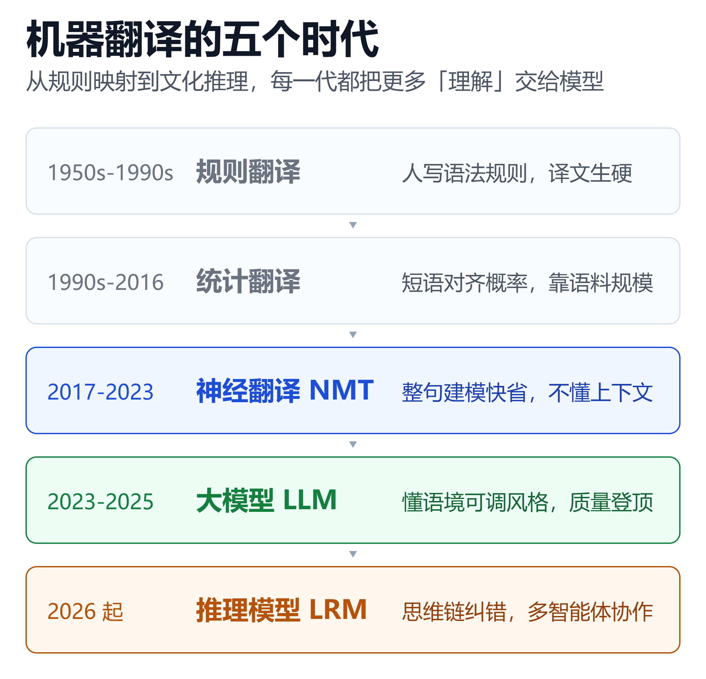
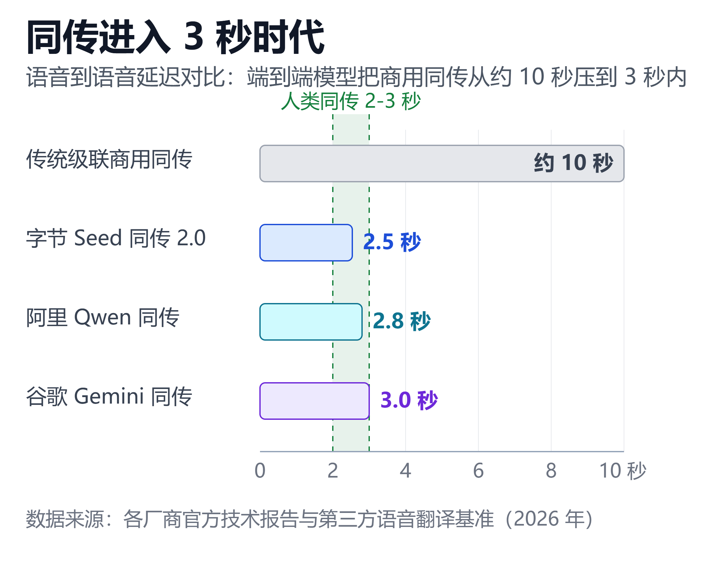

AI翻译十年演进：NMT退场、大模型登基与翻译大模型的中国路线
序言：一场已经分出胜负的比赛
2025 年秋天，机器翻译领域规格最高的赛事 WMT25 落幕。36 支队伍提交了 60 个系统，覆盖 30 个语向，最终人工评测给出了一个冷酷的结论：谷歌翻译、DeepL、Yandex 等传统神经机器翻译引擎，在每一项任务上都输给了大语言模型。夺冠的 Gemini-2.5-Pro 拿下最多单项第一，中国厂商腾讯 Hunyuan-MT-7B 斩获 30 个语种第一，阿里国际 Marco-MT 在最受关注的英中语向登顶。
这不是一次偶然翻车，而是十年技术积累的总兑现。与此同时，另一组数字说明这场变革有多值钱：AI 翻译市场 2026 年规模约 35 亿至 40 亿美元，预计 2030 年达到 80 亿至 100 亿美元；翻译独角兽 DeepL 在 2024 年拿到 3 亿美元融资、估值 20 亿美元，2025 年一度传出以 50 亿美元估值推进 IPO。
但胜负之外更值得关心的问题是：传统 NMT 真的退场了吗？大模型翻译的成本账算得过来吗？中国厂商走的"翻译大模型"路线，和海外是一回事吗？
本文把翻译技术十年演进、国内外主流翻译器格局、NMT 与 LLM 之争、以及 2026 年的五个关键趋势，一次讲清楚。
一、十年四次换代：翻译技术的演进主线
1.1 五个时代的简史
机器翻译从来不是一夜变天。从 1950 年代的规则系统到今天的推理模型，技术路线换了四轮：
| 时代 | 核心技术 | 翻译特点 |
|---|---|---|
| 规则时代 | 语法规则加词典 | 生硬，需大量人工 |
| 统计时代 | 短语对齐概率 | 略流畅，依赖语料 |
| 神经时代 | Transformer 编解码 | 流畅，句段级理解 |
| 大模型时代 | 指令与长上下文 | 懂语境，风格可调 |
| 推理时代 | 思维链与自我纠错 | 文化推理，文档级 |
真正的分水岭是 2017 年。Google 的 Transformer 架构让神经机器翻译（NMT）迅速统治业界，整句建模取代逐词对齐，译文第一次读起来"像人话"。同一年，基于在线词典 Linguee 十亿级双语语料的 DeepL 在德国科隆成立，此后七年靠"译得更准"这一个卖点打穿欧洲市场。
1.2 NMT 的黄金十年与结构性缺陷
2017 到 2023 年是 NMT 的黄金期：谷歌翻译覆盖 249 种语言，DeepL 在德法西等欧洲语种上封神，百度、腾讯、阿里、字节各自建起百亿字符级的翻译引擎。NMT 的优势极其务实——快、便宜、稳定：推理速度比大模型快 10 到 100 倍，每百万词成本只要 20 到 30 美元，而且同样输入永远给出同样输出。
但句段级翻译的天花板也很清楚：模型一次只看一个句子，第 3 页定义好的术语到第 40 页可能就漂移了；遇到俚语、双关、文化负载词只能字面对译。传统 NMT 不理解上下文，它只是在做极其精致的映射。
1.3 大模型登基：两届 WMT 的判决
拐点在两年内连续被验证。WMT24 上，大模型在 11 个语向中的 9 个击败了专用 NMT 系统；到 WMT25，结论扩展为全面碾压。评价机构的原话是：传统机器翻译引擎在所有任务上的得分都低于大语言模型。
值得注意的是中国厂商的成色。腾讯开源的 Hunyuan-MT-7B 在 31 个语种测试中拿下 30 个第一，在 Flores200、WMT24pp 上超过 Gemini-2.5-Pro 和 Claude-Sonnet-4；它能把"砍一刀"正确理解为拼多多的降价机制，而谷歌翻译只能字面直译。阿里国际的 Marco-MT 拿下六项冠军，英中语向超过 GPT-4.1、Gemini 2.5 Pro 与 Claude 4。大模型对语境和文化背景的理解优势，在中文这类高语境语言上被急剧放大。

图 1：翻译技术经历规则、统计、神经、大模型四次换代，2026 年正迈入以思维链推理和多智能体协作为特征的第五阶段。核心结论是：每一代的驱动力都从"更准的映射"转向了"更深的理解"。
1.4 第四次换代：翻译变成推理任务
2026 年的学术前沿给出了下一代范式。阿里巴巴与爱丁堡大学团队在 LREC 2026 的立场论文中提出：推理模型（LRM）正把翻译重构为一种动态推理任务，带来三个基础性转变——
- 语境连贯：通过显式推理处理跨句、复杂甚至缺失的上下文，保住话语结构
- 文化意图：推断说话者意图、受众预期与社会语言规范，主动调整输出
- 自我反思：推理过程中自查并纠正翻译错误，在噪声输入下更鲁棒
论文还观察到一个有趣现象：模型会自动选择英语或中文作为"枢纽语言"去桥接第三种语言，哪怕没人要求它这么做。当然代价同样存在——推理开销带来的延迟，以及"过度本地化"（为迎合目标语习惯而牺牲原作风格）的新风险。
二、国外主流翻译器：三条路线的分野
2.1 DeepL：专精模型的坚守者
DeepL 是"专精模型打败通用大厂"的经典样本，也是当前唯一能与美国巨头分庭抗礼的欧洲 AI 独角兽。它的护城河有三层：Linguee 十亿级双语语料库、人类专家参与的训练方法（接近 RLHF 的偏好对齐）、以及面向企业的术语库与保密承诺。
商业数据同样亮眼：2024 年 5 月融资 3 亿美元、估值 20 亿美元；累计融资 5.36 亿美元；2025 年 10 月传出拟以最高 50 亿美元估值赴美 IPO。不过进入 2026 年，CEO Kutylowski 公开降温，称在 OpenAI、Anthropic 等巨头排队上市的当下，"保持私有不少优势"。
产品动向更能说明战略：2026 年 6 月 DeepL 收购语音初创公司 Mixhalo，切入低延迟实时语音；与法律 AI 公司 Harvey 达成合作；DeepL Write 则把翻译延伸到商务写作。从纯文本翻译走向"语言 AI 平台"，是 DeepL 对大模型冲击的回应。
2.2 Google：语种霸主的转身
谷歌翻译的资产是无人能及的覆盖面——249 种语言、完全免费、深度集成在 Android 与 Chrome 里。但在质量上，它已从引领者变成追赶者。
真正的变化发生在实验室里。Google Translate 提交给 WMT25 的参赛系统，是以开源的 Gemma 3 大模型为底座：先用高质量合成平行语料做监督微调，再用基于翻译指标的奖励模型做强化学习。通过组合不同的奖励模型，他们能调出"更字面"或"更流畅"两种风格的译文——最终选了更流畅的版本参赛，哪怕牺牲部分准确性。这等于官方承认：风格与准确的权衡，第一次变成了可调节的旋钮。
语音侧的反击在 2026 年 6 月落地：Gemini 3.5 Live Translate 发布，专为连续语音到语音翻译打造，约 3 秒恒定延迟，支持 2000 多种语言组合，已在 Google Translate 应用与 Meet 中铺开。
2.3 OpenAI 与 Anthropic：对话式翻译的降维打击
通用大模型没有把翻译当主业，却意外成了最强的"翻译工具"之一。它们的杀手锏是对话式修改：先翻，再要求"更口语一点""术语统一成机器学习""用鲁迅的语气重翻"，这是任何专用翻译软件都做不到的交互。
多家横评给出的共识大致相同：Claude 在文学与长文翻译上自然度最高，中文几乎无翻译腔；ChatGPT 胜在生态整合与多轮修改；Gemini 强在文档格式保留与 Google Workspace 打通。代价也明确——慢、贵、会幻觉（偶尔添加原文没有的内容），且免费额度有限。
三、中国路线：翻译大模型的全面换轨
3.1 大厂云的四强格局
国内 B 端翻译能力高度集中在四朵云上，且 2025 至 2026 年全部完成了向"翻译大模型"的切换：
| 厂商 | 翻译底座 | 标志性成绩 |
|---|---|---|
| 百度 | 翻译大模型 | 200 语种，日均千亿字符 |
| 腾讯 | 混元翻译 | WMT25 三十语种第一 |
| 阿里 | Qwen-MT、Marco | WMT25 英中语向冠军 |
| 字节 | 豆包翻译模型 | 28 语种，每百万字符 1.2 元 |
几家的分工已经清晰：百度强在语种覆盖与政企私有化，支持近 4 万个语言方向，并自研了基于语义单元的语音到语音同传；腾讯走开源路线，Hy-MT2 系列覆盖 1.8B 到 30B-MoE，1.8B 模型经极端量化后仅 440MB，可直接跑在端侧设备；阿里的 Qwen-MT 分出 plus、flash、lite 三档，分别对应专业文书、通用场景与实时聊天，并原生支持术语干预、翻译记忆与领域提示；字节则把价格打穿，豆包翻译模型每百万字符输入仅 1.2 元。
3.2 传统 NMT 退场的两个信号
判断国内技术换轨，有两个细节比任何发布会都可靠：
- 腾讯翻译君 API 于 2025 年 4 月 15 日正式关闭，官方公告让用户迁移到混元翻译
- 华为云机器翻译 API 中，阿拉伯语、德语、俄语、法语、日语等一大批语种被标注"即将下线"
曾经独立运营的传统 NMT 产品线，正在被收敛进"翻译大模型"这一个底座。这与海外的渐进式混合路线不同，国内头部厂商的换代更决绝。
3.3 C 端：独立厂商与免费大模型
C 端的格局则是"专业厂商守场景，通用大模型抢入口"：
- 有道：子曰翻译大模型（14B 垂类路线），中英互译 BLEU 约 42（谷歌翻译约 38），支持 109 种语言。2026 年 Q2 AI 订阅收入约 1 亿元，AI 同传使用量同比翻倍，并推出行业首个"同传 Agent"与可音色克隆的翻译耳机
- 彩云小译：自研小译 V4 加 DeepSeek、GLM 多模型可选，内置 10 万条术语库，以小说与网页双语对照见长
- 沉浸式翻译：独立开发者起家的聚合层，用户超 800 万，可自由切换 DeepL、Google、ChatGPT 等 10 多种引擎
- 豆包、DeepSeek、Kimi：以免费加国内无障碍，吃掉了大量日常翻译需求
3.4 中国独有的两条赛道
除了通用翻译，国内还长出了海外没有的两条曲线：
硬件同传。讯飞翻译机与双屏翻译机、有道 AI 耳机 OpenPods、华为小艺翻译，把实时翻译做进了实体设备。讯飞在 2026 年 BEYOND 展会还发布了配 AI 眼镜与耳机的多模态翻译 SaaS 平台，数据保留在企业私有云。
视频译制出海。火山引擎的 AI 视频翻译打通字幕、配音、口型全链路；有道的 iMagicBox 集成 2000 多个数字人形象做广告素材本地化，成本较人工降低约 70%。这是中国出海内容产业直接催生的需求。
四、NMT vs LLM：一场没有赢家的争论
4.1 七个维度的正面比较
"谁更好"在 2026 年已有相对清晰的答案——取决于翻什么：
| 维度 | 大模型 LLM | 传统 NMT |
|---|---|---|
| 通用文本 | 更自然流畅 | 略带翻译腔 |
| 技术文档 | 有幻觉风险 | 术语更精准 |
| 速度 | 慢 10 到 100 倍 | 快且稳定 |
| 百万词月成本 | 200 至 500 美元 | 20 至 30 美元 |
| 结果一致性 | 每次可能不同 | 确定可复现 |
| 低资源语种 | 跨语迁移更好 | 依赖平行语料 |
最尖锐的分歧在幻觉：大模型可能改写否定句、补出原文没有的数字，在法律与医疗场景里，"自信的错误"比"生硬的正确"危险得多。这正是 DeepL 主打"专用模型降低幻觉"、以及受监管行业坚持人工终审的原因。
4.2 成本账：为什么混合才是主流
按每月一百万词的口径，业界测得的成本大致是这样的：
| 翻译方案 | 每月成本 | 适用场景 |
|---|---|---|
| 传统 NMT | 20 至 30 美元 | 大批量低风险 |
| 专业 NMT API | 60 至 100 美元 | 文档与术语 |
| 大模型 API | 200 至 500 美元 | 创意与上下文 |
| 专业人工翻译 | 2.5 万至 7.5 万美元 | 出版与合规 |
大模型能达到专业人工质量的 85% 到 90%，成本却只有 1% 到 2%；NMT 能达到 80% 到 85%，成本是 0.05% 到 0.1%。 选哪一档，本质是在质量光谱上挑位置。
Welocalize 在 EAMT 2026 发布的一项生产级研究提供了迄今最大规模的实证：71262 个翻译段、10 种目标语言、5 个领域，60 名专业译员盲评。结果出人意料——"机器翻译加 AI 后编辑"的工作流在所有自动指标上全面领先，LLM 直译只比通用机器翻译略好，在人工排名中 DeepL 甚至整体垫底。
研究的结论值得所有企业记住：最大的价值不在于用 LLM 替换既有流程，而在于让 AI 在企业术语库、风格指南和翻译记忆的约束下做精修。赢的不是模型，是编排模型的系统。

图 2：2026 年主流同传系统的语音到语音延迟已全部压进人类同传的 2 至 3 秒耳到耳区间。关键结论是：端到端建模加音色复刻，让"AI 同传听不出是 AI"从概念变成了产品指标。
五、2026 年的五个趋势
趋势一：从单模型到多智能体翻译流水线
2026 年本地化行业最明显的转变是 Agentic 化：翻译不再是一次调用，而是翻译、术语、质检、编排四类 Agent 的协作。编排者按质量评分决定一个段落是返工重翻、交给术语 Agent 修正，还是直接放行。Nimdzi 100 报告直接把 2026 年定义为"Agentic 方案激增"的一年。
趋势二：同传进入 3 秒时代
级联式的"语音识别、再翻译、再合成"三段管线正在被端到端模型取代。字节 Seed LiveInterpret 2.0 首词延迟 2.21 秒、语音到语音 2.53 秒，并能复刻说话人音色；阿里 Qwen3.5-LiveTranslate 平均每 token 延迟降至 2.8 秒，还能用嘴型和手势消解嘈杂环境中的歧义；谷歌 Gemini 3.5 Live Translate 约 3 秒恒定延迟。人类同传的 2 到 3 秒耳到耳延迟，已被系统性追平。
趋势三：自适应 MT 与翻译记忆复利
翻译记忆（TM）从被动查库变成主动学习：译员每修正一个段落，系统就更新一次行为。行业数据显示，AI 增强的翻译记忆能将匹配率提升最多 35 个百分点。把每个项目当作独立任务的团队会永远重复付学费，而维护好语料资产的团队质量会随时间复利。
趋势四：质量估计分流与治理合规
质量估计（QE）无需人工参考即可给译文打分，高置信度直接发布、低置信度才送人工，把专家精力集中到真正难的 20%。与之配套的是治理升级：EU AI Act 已把翻译工作流纳入监管视野，ISO 18587 修订版预计 2026 年完成，将把大模型输出的后编辑一并纳入规范。eBay 在 SlatorCon 上的表态很典型——所有 AI 能力必须先过"负责任 AI 准入"流程才能上线。
趋势五：译员从改稿者变成 AI 指挥
人工翻译的量在降，人的位置却更靠前了。译员的角色正从逐句改稿转向质量监督、术语治理、流程设计与 AI 输出评估——Nimdzi 把这个新角色称为"语言架构师与 AI 指挥"。专家在环（expert-in-the-loop）模式不但没有消失，反而成了高风险内容不可协商的兜底。
小结
回头看这十年，翻译技术的演进逻辑其实只有一条：从"如何映射得更准"走向"如何理解得更深"。 规则时代靠人写规则，统计时代靠语料概率，神经时代靠整句建模，大模型时代靠上下文理解，推理时代靠思维链与自我纠错——每一代都在把更多的"理解"交给模型。
对使用者而言，2026 年的选型建议可以压缩成三句话：欧洲语言与专业文档用 DeepL，长文本与风格定制用大模型，日常与小语种用谷歌翻译和国内免费大模型；国内场景则优先有道、豆包、混元与 Qwen-MT。高风险内容永远是"AI 出初稿、人工做终审"。
对行业而言，真正确定的只有一件事：没有哪个单一引擎会赢，赢的是把引擎、术语库、质量估计和人工审核编排成系统的人。 NMT 没有退场，它退到幕后成了稳定便宜的地基；大模型登基，但它需要一整套治理来约束。而中国路线的独特之处在于换轨更彻底——在别人做混合的同时，国内头部厂商已经把传统翻译引擎合并进了翻译大模型这一条底座，并在开源端侧模型、硬件同传和视频译制三个方向上跑出了自己的曲线。
免责声明
本文仅为行业信息整理与技术趋势分析，不构成任何投资建议。文中涉及的评测分数（BLEU、COMET、WMT 排名等）来自不同机构、不同口径的测试，仅供横向参考，不代表在所有场景下的实际表现。各产品价格、语种支持与功能以厂商官方最新公告为准。引用的市场数据来自第三方研究机构估算，不同方法论下存在差异。
参考来源
- ACL Anthology —— Findings of the WMT25 General Machine Translation Shared Task
- ACL Anthology —— Google Translate's Research Submission to WMT2025
- ACL Anthology —— New Trends for Modern Machine Translation with Large Reasoning Models (LREC 2026)
- Rivista —— WMT 2025 大规模基准评测报告
- NLLB —— LLM vs Neural Machine Translation in 2026
- DeepL —— DeepL Announces $300 Million Investment at $2 Billion Valuation
- TechCrunch —— DeepL nabs $300M on a $2B valuation
- SiliconANGLE —— AI translation startup DeepL reportedly weighing $5B IPO
- Tech.eu —— DeepL boss says being private has a lot of advantages right now
- 腾讯新闻 —— 腾讯开源WMT2025冠军大模型：拿下30个第一
- CSDN —— 阿里国际 Marco 获 WMT 机器翻译大赛六项冠军
- Hugging Face —— Tencent Hy-MT2 开源模型卡
- 阿里云百炼 —— 通义千问翻译模型 Qwen-MT 文档
- 腾讯云 —— 腾讯混元大模型翻译产品概述
- IT之家 —— 字节跳动推出豆包翻译大模型：支持 28 种语言互译
- 百度智能云 —— 机器翻译产品页
- 腾讯翻译君 —— API 服务关闭公告
- 华为云 —— 机器翻译 NLPMT 服务接口说明
- 新浪科技 —— 网易全平台升级有道子曰翻译大模型
- 增长黑客 —— 网易有道 2026Q2 财报：AI 原生战略加速兑现
- ByteDance Seed —— Seed LiveInterpret 2.0 官方页
- arXiv —— Seed LiveInterpret 2.0: End-to-end Simultaneous Speech-to-speech Translation
- Alibaba Cloud Blog —— Qwen3.5-LiveTranslate: From Sound to Sight
- LiveLingo —— Real-Time Voice Translation Benchmark 2026
- OpenL —— 2026 年 AI 翻译趋势：到底在发生什么变化
- Welocalize —— AI Post-Editing at Scale: What 71,262 Segments Reveal
- KTTC —— AI Agents in Translation Workflows: Multi-Agent Architectures in 2026
- TextUnited —— AI translation trends in 2026: key shifts every global team must know
- RWS —— What is AI translation in 2026?
- Slator —— AI Localization's Next Challenge Is Governance, eBay and XTM Say
- AD VERBUM —— Is neural machine translation obsolete for regulated work?
- Nimdzi —— The 2026 Nimdzi 100
- 网易有道 —— 2026 AI 翻译横评：有道 vs DeepL vs ChatGPT vs Google
- Life Class —— AI翻译工具横评：DeepL vs 谷歌翻译 vs 有道 vs 彩云
- AI工具Lab —— AI翻译工具推荐2026：8款AI翻译软件实测
- 九号工具站 —— 2026 AI 翻譯工具實測：DeepL、ChatGPT、Claude、Gemini 誰最強
- 买购网 —— 2026 年十大在线翻译品牌排行榜
- 讯飞听见 —— 官网
- 华为 —— 小艺翻译功能介绍
延伸阅读
- 2026 商用 ASR 语音识别全景选型：国内外 13 款产品横评，中文/英文/方言/小语种全覆盖
- 别再为 TTS 多花钱——2026 年商用 + 开源语音合成选型指南（含方言/小语种评测）
- 像打电话一样聊AI：全双工语音模型开源/闭源终极横评，谁更值得押注？
- 大模型时代的专用小模型图鉴：从对抗到共生
- 2026端侧大模型全景：当多模态AI塞进你的手机和笔记本
- 2026年开源大模型最新选型指南：Kimi K2.6 / DeepSeek V4 / Qwen 3.6 / Llama 4 / MiniMax M2 / GLM-5.1 六大模型深度对比
- 大模型评测全指南：从 MMLU、SWE-bench 到 Arena，读懂指标、排名与真实能力
推荐搭配装备
善其事，利其器。以下硬件能最大化你的AI体验👇
🔗 通过以上链接购买可支持本站持续运营 🙏